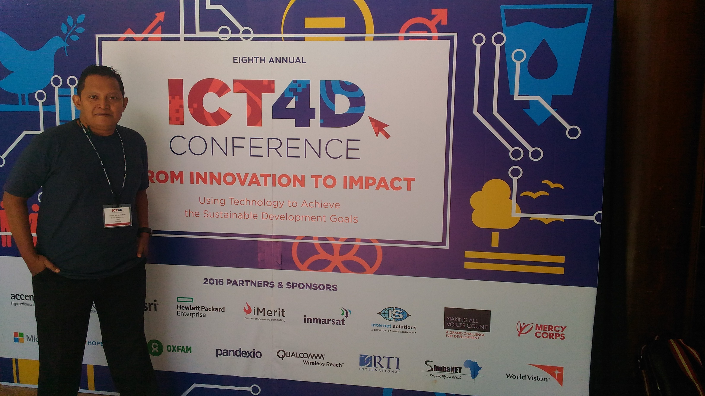
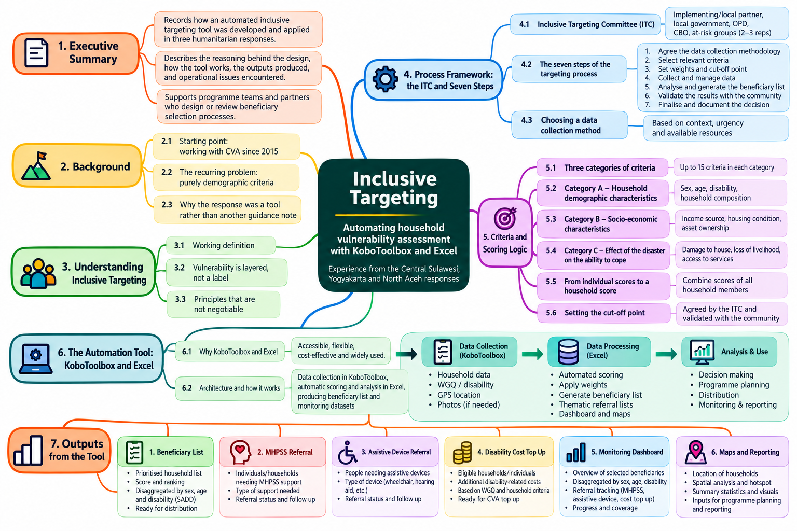
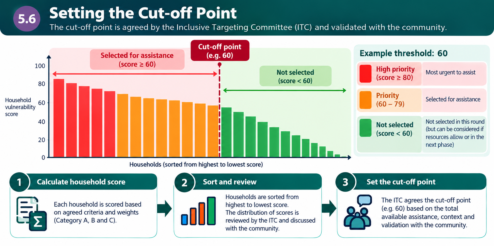
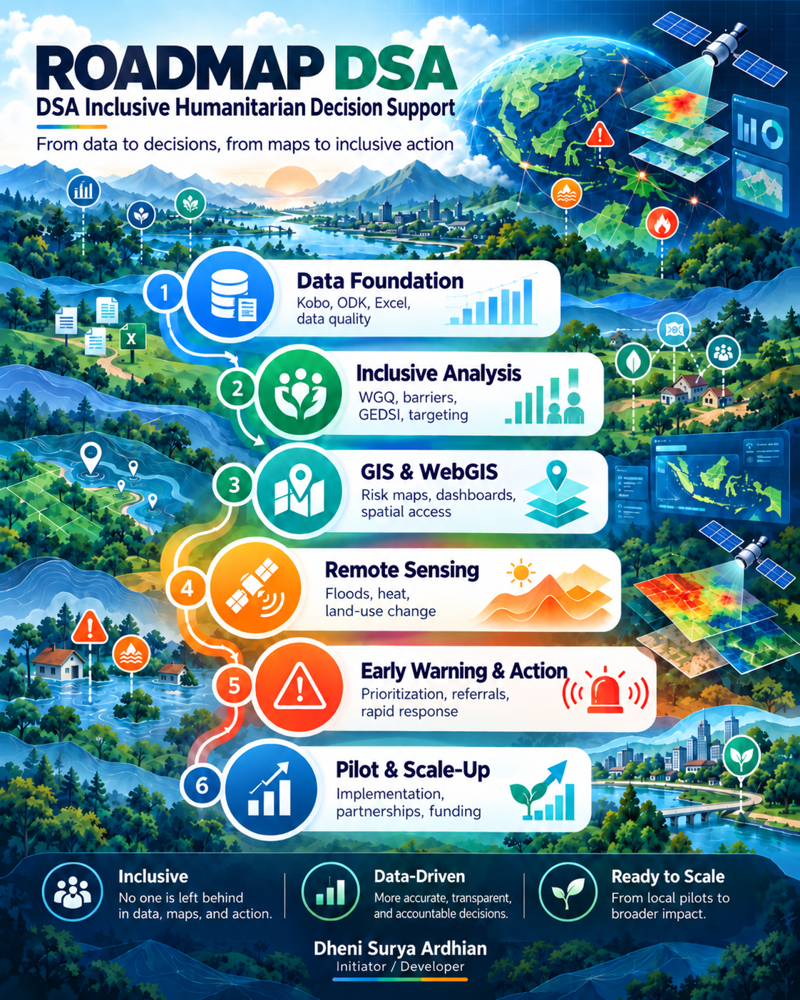
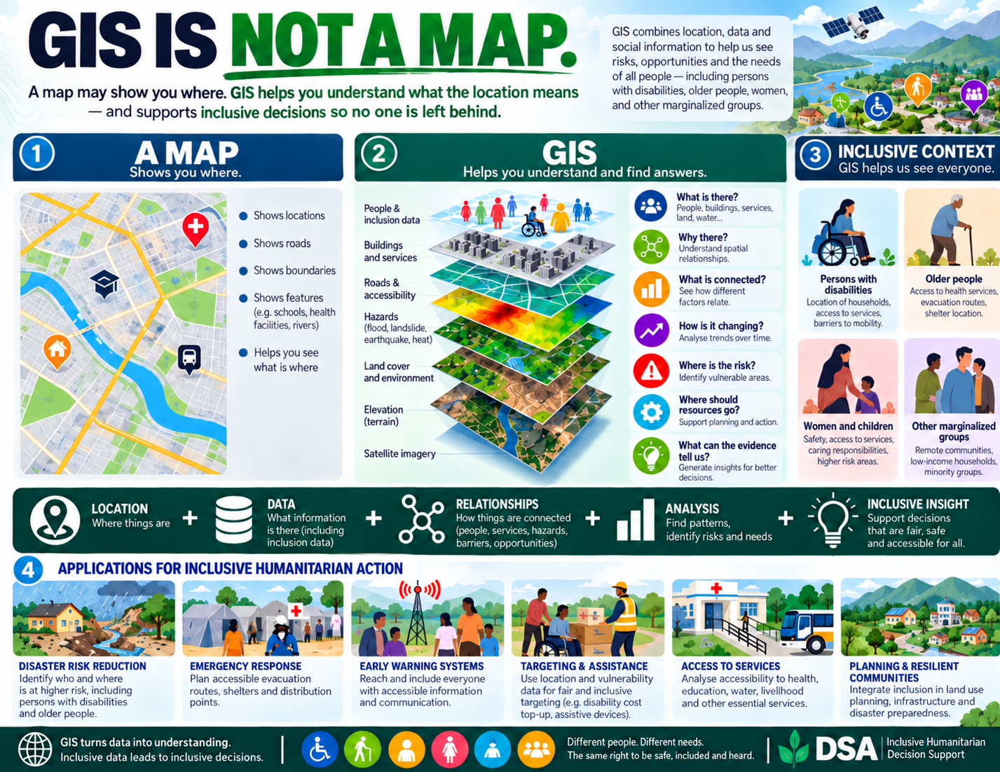

Remote sensing
Satellite-based observation for hazards, environmental change and disaster impact.
Connecting satellite data, GIS, risk analysis and disability inclusion to support practical humanitarian decisions.
DSA is an independently developed initiative exploring how remote sensing, spatial analysis and inclusive humanitarian information can be brought together. This public website documents the work, methodology, development progress and financial transparency. It does not represent an NGO or charitable organization.
Dheni Surya Ardhian / DSA did not begin with technology. It grew from years of working across humanitarian response, disaster risk reduction, disability inclusion, cash and voucher assistance, vulnerability assessment, field assessment, and communities affected by crises.

My journey into humanitarian technology did not start as a software engineer or remote-sensing scientist. It started in humanitarian practice — trying to understand who is affected, who faces greater barriers, whose needs are not adequately captured, and who may remain unseen in humanitarian data and decision-making.
A significant turning point in this journey was the development of disability-inclusive targeting. The objective was not simply to identify who should receive assistance, but to use data to make different layers of vulnerability, disability-related barriers and specific support needs more visible in humanitarian decision-making.
This approach helped reveal needs that can easily remain unseen, including MHPSS referrals, assistive device needs, disability-related additional costs, accessibility barriers and other forms of vulnerability.
This experience became the inspiration for developing broader tools. Digital data collection and automated analysis gradually connected with GIS, WebGIS and remote sensing — expanding the ability to understand not only who may be at risk, but also where, why, and how hazards, vulnerability and barriers intersect.


A visual roadmap of how DSA connects data, inclusive analysis, spatial intelligence and humanitarian action.

Satellite-based observation for hazards, environmental change and disaster impact.
Spatial analysis combining hazard, exposure, vulnerability and capacity information.
Bringing disability inclusion and accessibility considerations into humanitarian analysis.
Turning technical information into maps, reports and evidence that can support decisions.
DSA uses spatial information not only to show where something happens, but to understand how people, hazards, barriers, services and vulnerability intersect — and how that evidence can support more inclusive humanitarian decisions.

From field assessment data to inclusion-sensitive humanitarian decision support.
iRNA is a working prototype that connects field data collection with an Excel-based analytical engine, inclusive analysis and WebGIS to support faster and more inclusive humanitarian assessment and decision-making.
iRNA brings different dimensions of household needs, vulnerability, barriers and inclusion into one assessment and decision-support workflow.
iRNA helps translate assessment findings into priorities, flags and referral pathways that can support humanitarian teams in determining appropriate follow-up actions.
Households experiencing the same emergency may require different forms of support. iRNA helps make those differences visible so that humanitarian decisions can respond not only to immediate needs, but also to barriers, functioning and disability-related support requirements.
Inclusion does not mean giving everyone the same response. It means recognising different barriers and support requirements so that assistance can be more equitable, accessible and appropriate.
Excel currently serves as the analytical engine of iRNA. Field records collected through Kobo / ODK are organised and interpreted to identify household priorities, vulnerability, barriers and potential referral needs before selected information is translated into a spatial view.
Explore how assessment information can be transformed into spatial vulnerability analysis, filtering and map-based decision support.
Privacy-safe public demonstration — household records and point locations are synthetic. No real beneficiary identities, original UUIDs or original household coordinates are published.
iRNA helps organize and interpret assessment evidence to support prioritization, referrals and operational decisions. Analytical outputs do not replace humanitarian judgement. Final decisions remain with responsible humanitarian teams and should consider field verification, local context and meaningful participation of affected people.
Current development stage: the present analytical engine uses Excel. Future development may migrate selected functions to a dedicated application and database architecture while retaining the field-to-analysis workflow.
Annual/comparable-period LST, year-to-year change, baseline anomaly, trend analysis and Sentinel-1 development.
Further development of humanitarian decision-support, remote-sensing and inclusive-analysis functions.
DSA demonstrations explore how remote sensing, GIS and disability-inclusive analysis can be translated into practical decision-support tools.
Spatial vulnerability scoring, disability-inclusive assessment, filtering and map-based decision support using synthetic data.
Open WebGIS →Satellite-based land surface temperature, anomaly, trend and hotspot analysis for humanitarian and climate-risk interpretation.
Terrain, elevation, river proximity and flood scenarios translated into spatial exposure and location-vulnerability analysis.
Multi-year satellite monitoring of land-cover change and upstream deforestation to support watershed condition, runoff interpretation and flood-risk analysis.
Demo in development →Combining household vulnerability, disability-related information and transparent scoring to support inclusive humanitarian targeting.
Connecting disability barriers, communication access and preparedness information with inclusive early-warning analysis.
DSA is a personal independent initiative. Voluntary support is recorded separately for DSA development. Periodic reports will show contributions received, development expenditure, remaining balance and outputs produced.
No figures are published here until verified records are available. Donor identities will not be published by default.
Support can take the form of technical feedback, testing, collaboration, opportunities to apply DSA to real humanitarian problems, or voluntary financial contributions.
Bank Mandiri
Account holder: Dheni Surya Ardhian
Account: 137.001.647.589.5
International transfer
SWIFT/BIC: BMRIIDJAXXX
Country: Indonesia
Questions, technical feedback and collaboration are welcome.